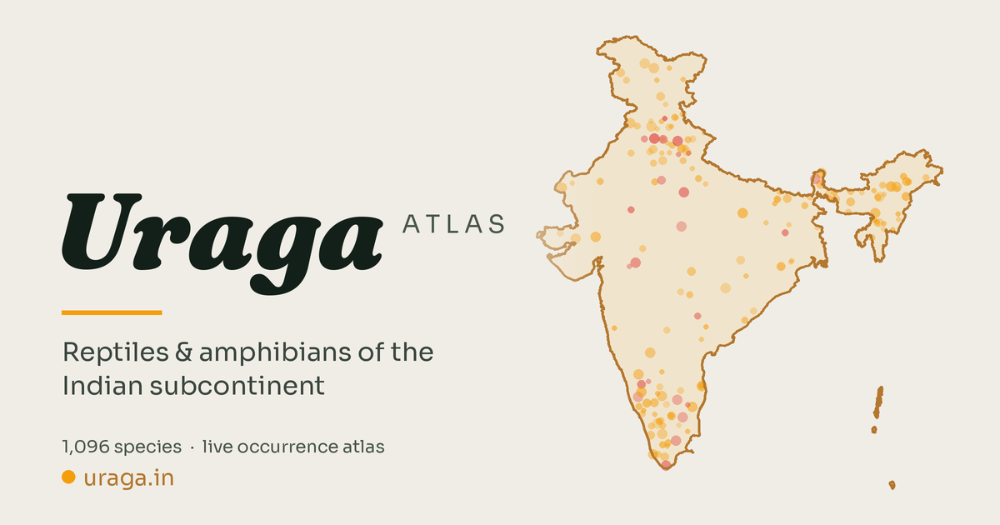

Web portal
Browse over 1,000 reptile and amphibian species of the Western Ghats and surrounding landscapes. See live occurrence records on a zoomable map, filter by taxonomy or region, and download a species checklist for any area. Free, no login.

The Uraga Atlas is an interactive biodiversity portal mapping the herpetofauna — reptiles and amphibians — of the Western Ghats and surrounding landscapes. Visitors can browse over 1,000 species, explore occurrence records plotted live on a zoomable map, view photographs, filter by taxonomy or administrative region, and generate downloadable species checklists for any area of interest. It works in the browser, requires no login, and is free to use.
Biodiversity data for Indian herpetofauna is scattered across global repositories, research papers, and institutional databases in formats that are hard to search, compare, or visualise together. Field naturalists, students, and researchers had no single place to ask "what lives here?" and get a spatial answer with photographs and record counts behind it. This portal brings that data into one place — open, mapped, and explorable.
The species list was assembled from taxonomy databases, IUCN assessments, and published checklists, then cross-referenced with GBIF, iNaturalist, and OBIS identifiers to connect each species to live global repositories. Occurrence points and photographs are fetched in real time from these open APIs when a species is selected — nothing is cached client-side, so the data stays current. The portal is a static site (plain HTML, CSS, and JavaScript) with no backend server; occurrence counts are refreshed weekly via an automated script. Protected area and administrative boundaries come from open government and Natural Earth datasets. Chao2 species richness estimators power the biodiversity reports.
Occurrence records: GBIF (CC BY 4.0 / open) and OBIS for marine species. Photographs: iNaturalist (per-observation Creative Commons licences, attributed on display). Range polygons: IUCN Red List spatial data. Administrative and protected-area boundaries: Survey of India / Bhuvan layers and Natural Earth (public domain). All third-party data is attributed within the portal at the point of use.
The portal is actively maintained. Near-term work focuses on data depth — richer natural history information, better coverage for under-documented groups, and expanded regional detail. Longer-term, the scope may grow beyond a single taxonomic group. If you spot a data error or want to get in touch, the repository is open on GitHub.